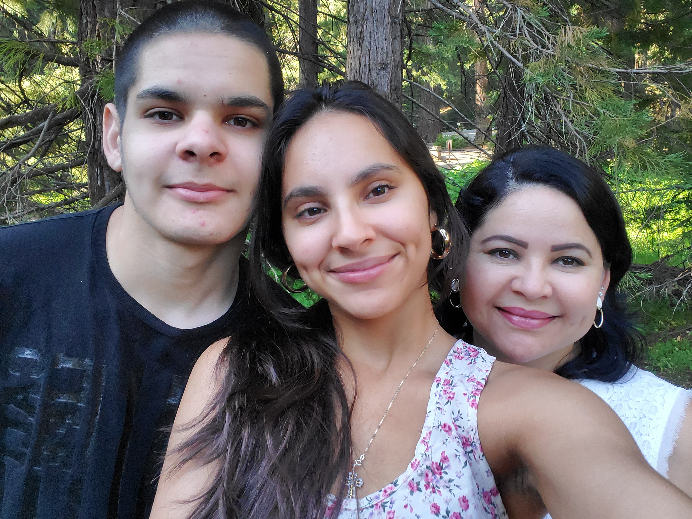

My career goal is to obtain a Bachelors's in Computer Science and work for big industries as a programmer. I have initialized my plan by taking the Computer Science courses at my school to enhance and expand my range of understanding when it comes to languages within computer science. Moreover, I have been contemplating my decisions for years when it comes to a career, and when I got into coding it became an addiction. Over time, I knew this was the career for me, I want to advance with technology and be alongside it as it evolves and not stay out of the loop. Therefore, not only do I see my future career as a hobby that will bring in income, but it is also my form of entertainment as I am a persistent learner and thrilled to advance further in my career.
Throughout my short time of programming and learning the arts of computer science I have improved my skills drastically as I learn more about the language and syntax. I contain numerous qualities influenced by my parents and my culture, I firmly believe my parents have pushed me to become the persistent, hard-working, and determined individual that I am today. I have many morals that have built my character and I am content with these morals because without them I would not have gotten into programming and pursuing a life-changing career.
I have had numerous accomplishments throughout my minimal time with programming. For example, when I was 14 I founded and managed a network that hosted numerous game modes for players on Minecraft: Bedrock Edition and it had hundreds of online players with over 20 live servers. I hosted for approximately 9 months and had a net profit monthly. However, I shut down the network due to lack of time with school, and a decline in players as competition became fierce, and new games were released, thus, shifting the players elsewhere.